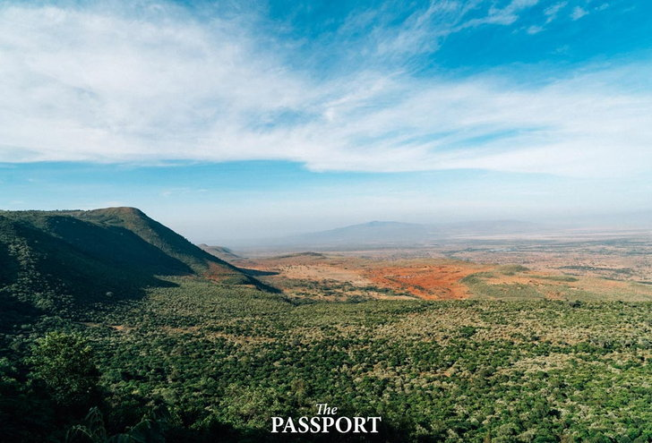
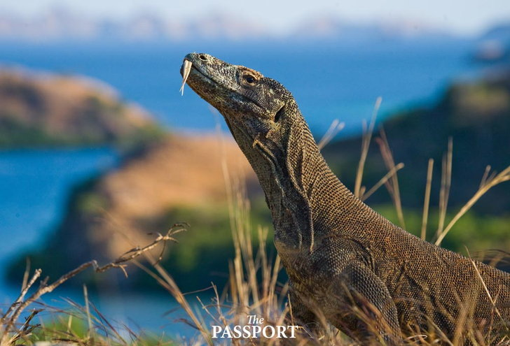
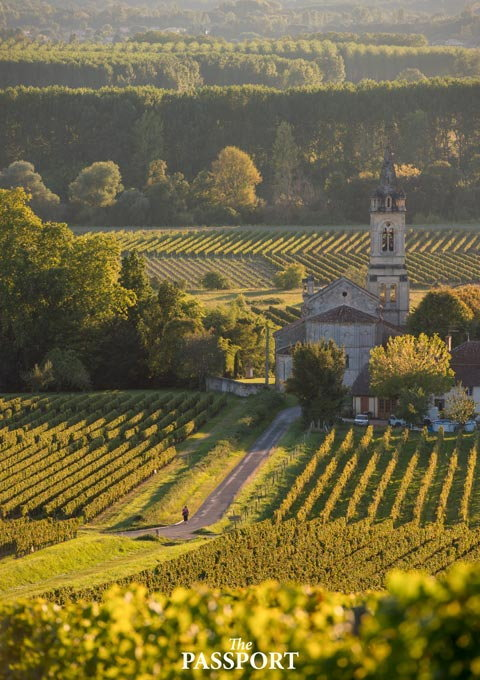
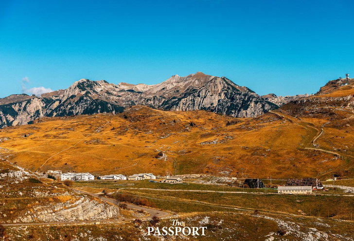
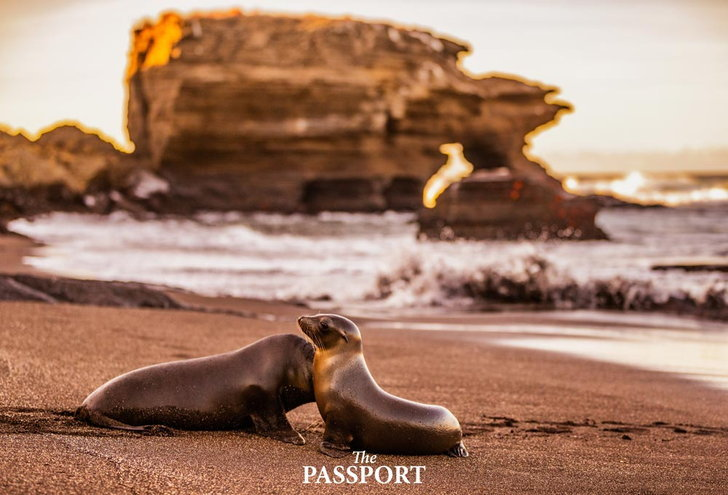
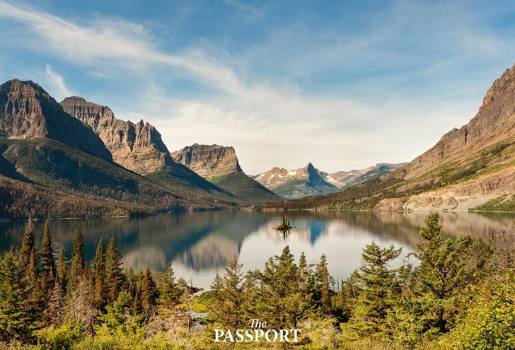
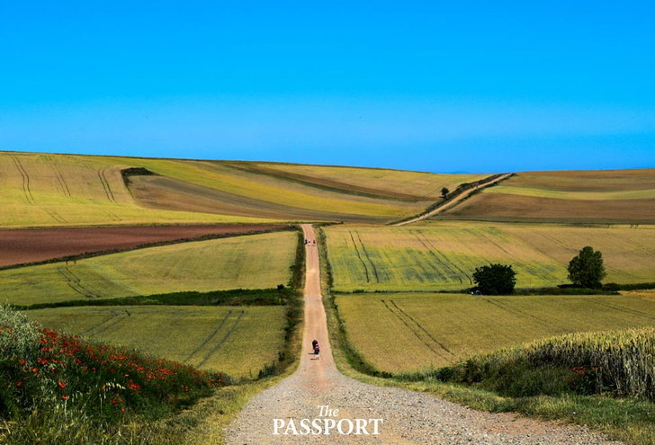
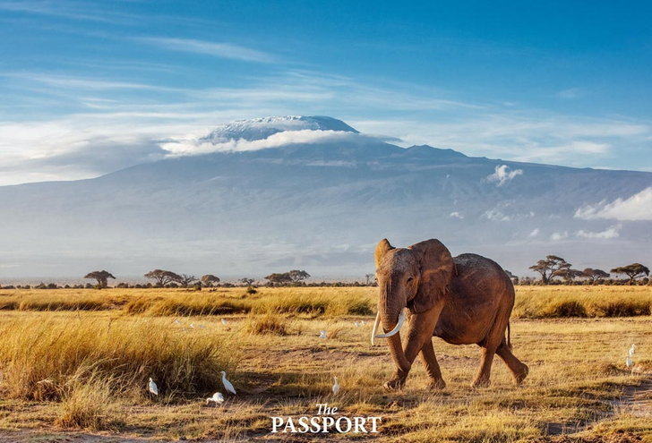

Online Reservation System
**********15.ประเทศที่สวยงามที่สุดในโลก**********
15.เคนยา

ทางตะวันตกเฉียงใต้ของเคนยา เป็นที่ตั้งของทะเลสาบเคนยาในหุบเขาเกรตริฟต์ (Great Rift Valley)
ซึ่งบริเวณนี้เป็นบ้านของยีราฟ คูดู เสือชีตาห์ สิงโต และแรดดำ ส่วนทางเหนือของเมืองหลวงไนโรบีก็มีเขาเคนยา (Mount Kenya)
ซึ่งเป็นภูเขาที่สูงเป็นอันดับสองของทวีปแอฟริกา และยังมีทะเลสาบเทอคาน่า (Turkana) กลางทะเลทราย เป็นที่อยู่ของทั้งจระเข้แม่น้ำไนล์และฮิปโปโปเตมัส
14. อินโดนีเซีย

นับเป็นอันดับที่สมเหตุสมผล หนึ่งในนั้นเป็นเพราะอินโดนีเซียเป็นแหล่งที่อยู่อาศัยของมังกรโคโมโดเพียงหนึ่งเดียวบนโลก
โดยอุทยานแห่งชาติโคโมโดนั้นตั้งอยู่บนเกาะภูเขาไฟที่มีประชากรกิ้งก่ายักษ์อยู่ไม่ต่ำกว่า 5,700 ชีวิต และเกาะอื่น ๆ ของอินโดนีเซียก็มีตัวเลือกอื่น ๆ ให้ท่องเที่ยวอีกมากมายตั้งแต่บาหลีไปจนถึงป่าฝนในสุลาเวสี
13. ฝรั่งเศส

ฝรั่งเศสมีดีตั้งแต่ไร่องุ่นในบอร์โดไปจนถึงชายหาดของริเวียร่า และมีสถานที่นอกแผ่นดินใหญ่ที่ช่วยเรียกคะแนนได้ไม่น้อยไม่ว่าจะเป็น
อุทยานแห่งชาติลาเรอูนียงบนเกาะเรอูนียง (Réunion) ทางตะวันออกของมาดากัสการ์ ที่เป็นดินแดนผสมผสานระหว่างป่าฝนและป่าเมฆอันน่าทึ่ง
รวมถึงเกาะนิวแคลิโดเนียใกล้ ๆ กับออสเตรเลีย ซึ่งเป็นแหล่งรวมสิ่งมีชีวิตใต้ทะเลและปะการังไว้มากมาย
12. อิตาลี

อิตาลีเป็นประเทศที่โดดเด่นด้านวัฒนธรรมมาก ๆ เพราะมีทั้งซากโบราณสถานและอาหารการกินที่ขึ้นชื่อ จึงไม่แปลกที่นักท่องเที่ยวส่วนใหญ่จะเดินทางมาเยือนด้วยสาเหตุดังกล่าว
มากกว่าจะมองหาสถานที่ท่องเที่ยวทางธรรมชาติ แต่ก็ต้องยอมรับว่าอิตาลีก็เป็นอีกประเทศที่มีธรรมชาติสวยงามน่าอวดอยู่เหมือนกัน เช่น Monte San Giorgio
ถือได้ว่าเป็นซากดึกดำบรรพ์ทางทะเลที่ดีที่สุดในยุค Triassic และยูเนสโกเองก็เคยกล่าวถึงความพิเศษของเทือกเขา Dolomites ไว้เช่นกันว่าเป็นกำแพงสูงชันที่งดงามกว่าแนวเทือกเขาอื่นใด
11. เอกวาดอร์

ในอุทยานแห่งชาติ Sangay ซึ่งได้รับการยกย่องให้เป็นมรดกโลกจากยูเนสโก เป็นที่ตั้งภูเขาไฟที่ยังคุกรุ่นอยู่ 2 แห่ง ไปจนถึงป่าฝนเขตร้อน
และธารน้ำแข็ง นอกจากนี้เกาะกาลาปากอสก็เป็นส่วนหนึ่งของเอกวาดอร์ด้วยเช่นกัน และเป็นที่อยู่อาศัยของสัตว์เลี้ยงลูกด้วยนมและสัตว์เลื้อยคลาน
เฉพาะถิ่นหลากหลายชนิด รวมถึงสัตว์ทะเลอีกมากมาย
10. สหรัฐอเมริกา

ดินแดนอันกว้างใหญ่ไพศาลของอเมริกา เป็นที่ตั้งของภูมิประเทศสุดแปลกตามากมาย
จึงไม่ใช่เรื่องแปลกที่มีจะอุทยานแห่งชาติเป็นจำนวนกวา 58 แห่งทั่วประเทศ จากป่าเรดวูดไปจนถึงน่านน้ำกัลฟ์สตรีม
รวมถึงทางตะวันตกเฉียงเหนือของหมู่เกาะฮาวาย และอุทยานแห่งชาติ Glacier
ที่บอกเลยว่าต่อให้ใช้เวลาทั้งชีวิตก็สำรวจพื้นที่ต่าง ๆ ได้ไม่รู้เบื่อ
9. สเปน

สเปนเป็นสวรรค์สำหรับนักเดินป่า โดนเฉพาะเส้นทาง Camino de santiago
ที่พาลัดเลาะข้ามประเทศไปยังปลายทางสุดท้ายด้านตะวันตกเฉียงเหนือของสเปน ระหว่างทางนั้นครอบคลุมพื้นที่อุทยานแห่งชาติ Doñana
ซึ่งมีนกใกล้สูญพันธุ์ถึง 5 สายพันธุ์อาศัยอยู่ ส่วนป่าลอเรลขนาดใหญ่ในอุทยานแห่งชาติ Garajonay
ในหมู่เกาะคานารีก็ควรค่าแก่การเยี่ยมชมเช่นกัน
8. แทนซาเนีย

แทนซาเนียเป็นที่ตั้งของเขาคิลิมันจาโร (Mount Kilimanjaro) ซึ่งเป็นยอดเขาที่สูงที่สุดของแอฟริกา
รวมถึงอุทยานแห่งชาติเซเรนเกตี (Serengeti National Park) ที่มีทั้งวิลเดอร์บีสต์ เนื้อทรายและม้าลายอาศัยอยู่
โดยมีปรากฏการณ์การอพยพครั้งใหญ่ เป็นหนึ่งในเหตุการณ์ทางธรรมชาติที่น่าประทับใจที่สุดในโลกที่ยูเนสโกยกย่อง
หน้าถัดไป!